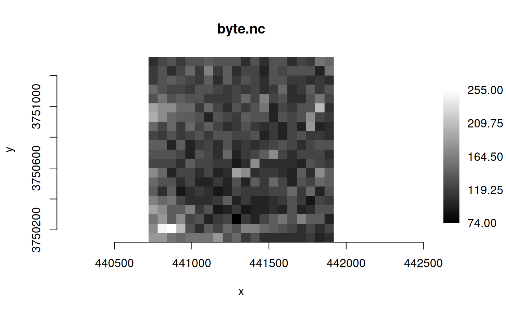

Return a view of an MDArray as a "classic" GDALDataset (i.e., 2D)
Source:R/gdal_mdim.R
mdim_as_classic.Rdmdim_as_classic() returns a 2D raster view on an MDArray in a GDAL
Multidimensional Raster dataset, as an object of class GDALRaster. Only 2D
or more arrays are supported. In the case of > 2D arrays, additional
dimensions will be represented as raster bands. Requires GDAL >= 3.2.
Usage
mdim_as_classic(
dsn,
array_name,
idx_xdim,
idx_ydim,
read_only = TRUE,
group_name = NULL,
view_expr = NULL,
allowed_drivers = NULL,
open_options = NULL
)Arguments
- dsn
Character string giving the data source name of the multidimensional raster (e.g., file, VSI path).
- array_name
Character string giving the name of the MDarray in
dsn.- idx_xdim
Integer value giving the index of the dimension that will be used as the X/width axis (0-based).
- idx_ydim
Integer value giving the index of the dimension that will be used as the Y/height axis (0-based).
- read_only
Logical value,
TRUEto open the dataset in read-only mode (the default).- group_name
Optional character string giving the fully qualified name of a group containing
array_name.- view_expr
Optional character string giving an expression for basic array slicing and indexing, or field access (see section
View Expressions).- allowed_drivers
Optional character vector of driver short names that must be considered. By default, all known multidimensional raster drivers are considered.
- open_options
Optional character vector of format-specific dataset open options as
"NAME=VALUE"pairs.
Note
The indexing of array dimensions is 0-based consistent with the
<ARRAY-SPEC> notation that may be used with GDAL CLI commands, e.g.,
gdal_usage("mdim convert") (CLI bindings require GDAL > 3.11.3).
See https://gdal.org/en/stable/programs/gdal_mdim_convert.html.
Once the returned GDALRaster object has been closed, it cannot be re-opened
with its $open() method.
View Expressions
A character string can be passed in argument view_expr to specify array
slicing or field access. The slice expression uses the same syntax as NumPy
basic slicing and indexing (0-based), or it can use field access by name.
See https://numpy.org/doc/stable/user/basics.indexing.html.
GDAL support for view expression on an MDArray is documented for
GDALMDArray::GetView() (see
https://gdal.org/en/stable/api/gdalmdarray_cpp.html) and copied here:
Multiple [] bracket elements can be concatenated, with a slice expression or field name inside each.
For basic slicing and indexing, inside each [] bracket element, a list of indexes that apply to successive source dimensions, can be specified, using integer indexing (e.g. 1), range indexing (start:stop:step), ellipsis (...) or newaxis, using a comma separator.
Example expressions with a 2-dimensional array whose content is
[[0,1,2,3],[4,5,6,7]].
"[1][2]": returns a 0-dimensional/scalar array with the value at index 1 in the first dimension, and index 2 in the second dimension from the source array. That is,5."[1,2]": same as above, but a bit more performant."[1]": returns a 1-dimensional array, sliced at index1in the first dimension. That is[4,5,6,7]."[:,2]": returns a 1-dimensional array, sliced at index2in the second dimension. That is[2,6]."[:,2:3:]": returns a 2-dimensional array, sliced at index2in the second dimension. That is[[2],[6]]."[::,2]": Same as above."[...,2]": same as above, in that case, since the ellipsis only expands to one dimension here."[:,::2]": returns a 2-dimensional array, with even-indexed elements of the second dimension. That is[[0,2],[4,6]]."[:,1::2]": returns a 2-dimensional array, with odd-indexed elements of the second dimension. That is[[1,3],[5,7]]."[:,1:3:]": returns a 2-dimensional array, with elements of the second dimension with index in the range[1,3]. That is[[1,2],[5,6]]."[::-1,:]": returns a 2-dimensional array, with the values in first dimension reversed. That is[[4,5,6,7],[0,1,2,3]]."[newaxis,...]": returns a 3-dimensional array, with an additional dimension of size1put at the beginning. That is[[[0,1,2,3],[4,5,6,7]]].
One difference with NumPy behavior is that ranges that would result in zero elements are not allowed (dimensions of size 0 not being allowed in the GDAL multidimensional model).
For field access, the syntax to use is "['field_name']". Multiple field
specification is not supported currently. Both type of access can be
combined, e.g. "[1]['field_name']".
Examples
f <- system.file("extdata/byte.nc", package="gdalraster")
# mdim_info(f)
(ds <- mdim_as_classic(f, "Band1", 1, 0))
#> C++ object of class GDALRaster
#> Driver :
#> DSN :
#> Dim : 20, 20, 1
#> CRS : NAD27 / UTM zone 11N (EPSG:26711)
#> Res : 60.000000, 60.000000
#> Bbox : 440720.000000, 3750120.000000, 441920.000000, 3751320.000000
plot_raster(ds, interpolate = FALSE, legend = TRUE, main = "Band1")

ds$close()